Introduction
FRVR is a next-generation social gaming platform empowering users to both play and co-create games through AI-driven tools. As Senior Product Designer, I was tasked with designing a mobile-first landing page that would drive user engagement, support community growth, and streamline the game creation process. This case study outlines the research, design process, and outcomes achieved in collaboration with a multidisciplinary team.
My Role
As Senior Product Designer, I collaborated closely with engineering and creative leads to define a cohesive vision, establish design priorities, and ensure seamless cross-platform execution.
Challenge
While online gaming communities are very popular, there was a noticeable gap in platforms that encouraged both social connection and creative collaboration among players. Most existing platforms didn’t make it easy, fun, or rewarding to share your unique perspective of gaming. FRVR set out to address this need by building a platform that validates users’ creativity and builds authentic community engagement.
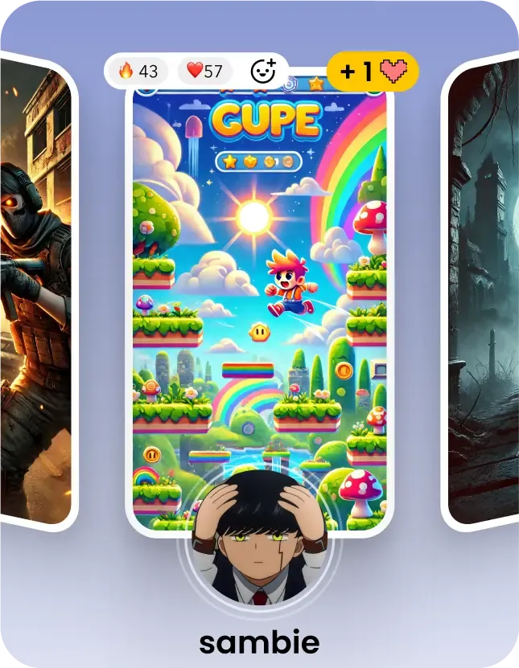
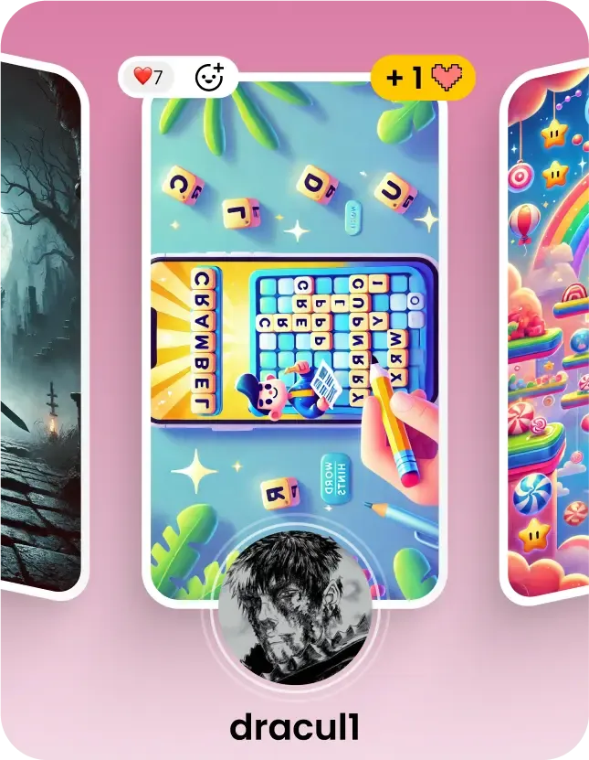
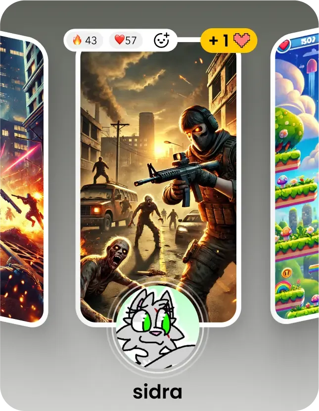
UX Goals
Design a visually compelling, mobile-first landing page that attracts and retains both players and creators.
Lower the barrier for game creation by integrating intuitive AI-powered tools.
Build community engagement through interactive, collaborative features.
Enhance user retention and platform stickiness by making discovery and socialisation seamless and enjoyable.
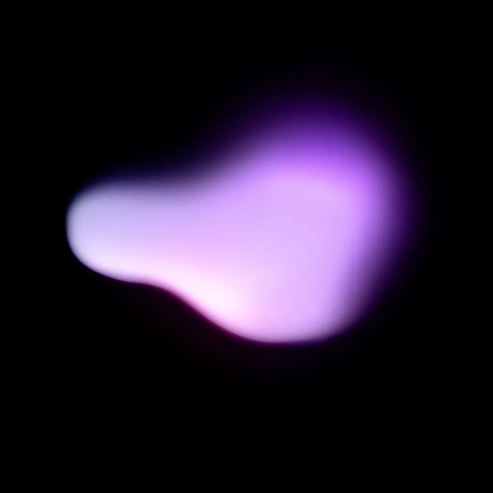
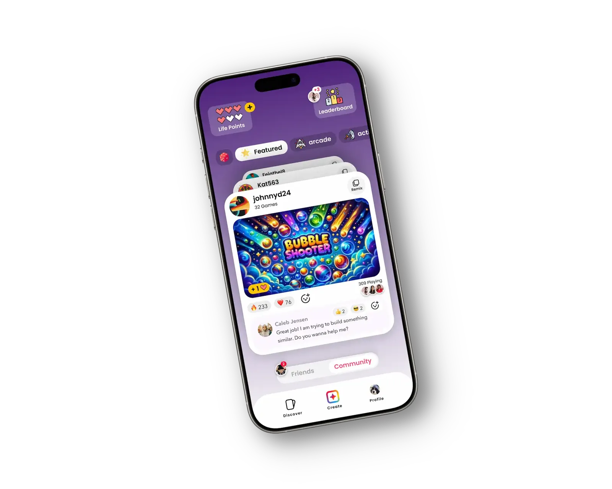
Research & Insights Gathering
To inform the design process, I conducted a competitive analysis of leading user-generated gaming platforms such as Roblox, Core, and Rec Room. Additionally, I watched closely user interactions in relevant online forums and communities to understand collaborative behaviours. This highlighted the importance of social validation, seamless co-creation, and the need for easy to use tools directly influencing our feature prioritisation and UX strategy.
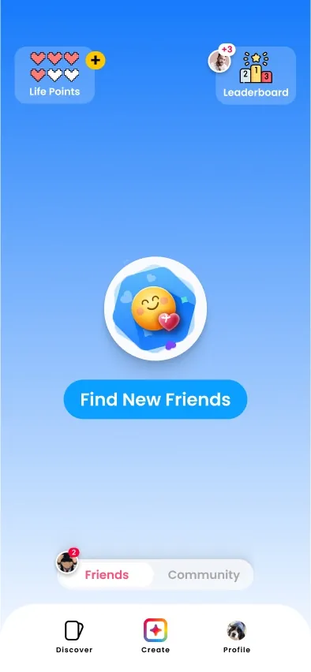
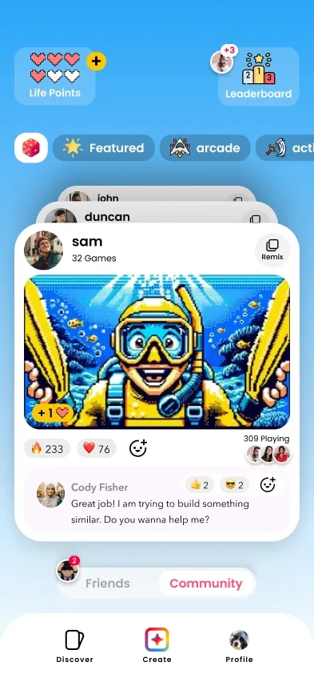
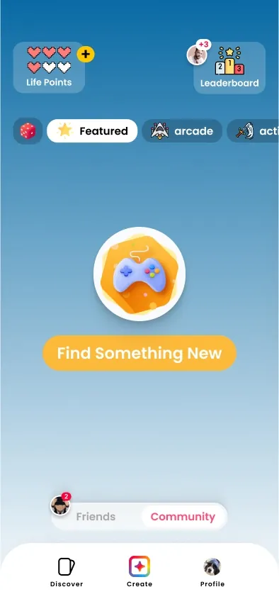
User Testing & Features Iteration
I developed interactive prototypes and conducted usability tests with a targeted group of potential users, focusing on both newcomers and experienced creators. Feedback emphasised the platform’s ease of use and the appeal of its social features, such as the Friends tab. Based on this input, I iterated on the design introducing features like a game roulette to create moments of surprise making the whole experience more rewarding and interactive.
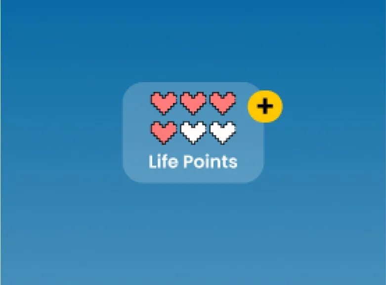
FEATURE
Reward System
Implemented a “Life Points” experience system, incentivising users to participate in platform activities. Points can be redeemed for customisation and exclusive content, encoraging ongoing engagement.
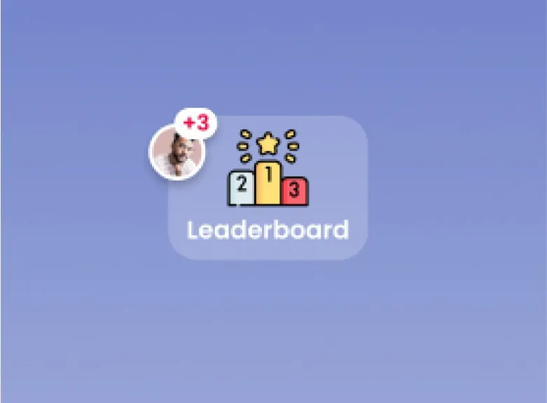
FEATURE
Weekly Leaderboard
Introduced to recognise top creators and players, driving friendly competition and reinforcing community bonds.
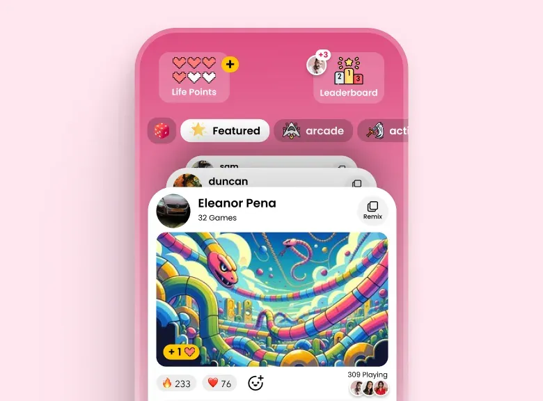
FEATURE
Immersive Home
Developed a TikTok-inspired dynamic feed to showcase trending games and content, making discovery engaging and effortless.
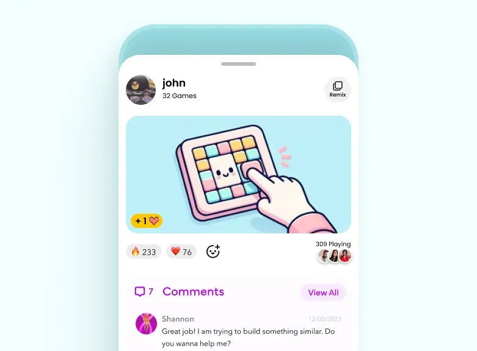
FEATURE
Social Features
Enabled friend connections, follows, and integrated voice/video chat for real-time collaboration, supporting deeper community interaction
FEATURE
Game Roulette
Launched a shuffle mode for game discovery, increasing exposure to new content and keeping user experience fresh.
Project Takeaways
The new FRVR successfully bridged the gap between gaming and social creation, delivering a platform that resonates with both new and experienced users. By prioritising community engagement, intuitive design, and discoverability, we achieved measurable improvements in user growth and retention. This project reinforced the value of iterative, user-centred design and cross-functional collaboration in building impactful digital products.